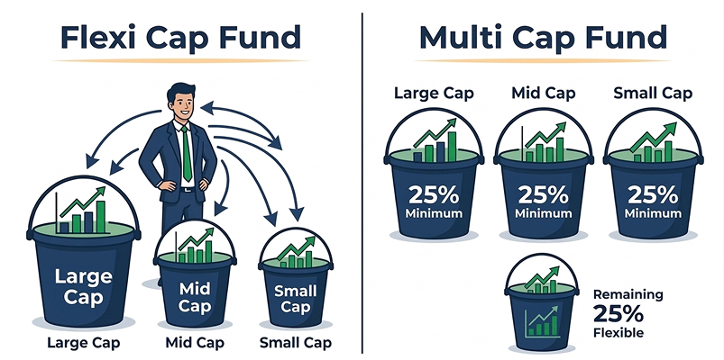

Difference Between Flexi Cap and Multi Cap Funds Made Simple

When someone first starts looking into equity investing, these two fund types often appear almost identical. The names sound alike, the universe of investment looks the same, and both provide diversification as an objective. However, once you understand the way they actually work with it, it is much clearer. Familiarising yourself with these options available in the universe of mutual funds in India can spare you the hassle of choosing the wrong fund.
What is Flexi Cap Fund
A flexi cap fund is designed to give the fund manager maximum freedom. There are no strict allocation rules. The manager can invest any percentage in large cap, mid cap, or small cap stocks, depending on where they see opportunity.
For example, if large companies look stable during uncertain markets, the manager can increase exposure there. When smaller companies show strong growth potential, the allocation can tilt in that direction. This ability to move freely allows the fund to adjust as market conditions evolve instead of staying fixed in one pattern.
Because of this open strategy, many investors see flexi cap funds as a convenient single fund solution. Rather than selecting separate funds for different segments, they prefer one fund that handles allocation decisions internally.
What is Multi Cap Fund
A multi cap fund also invests across companies of different sizes, but it operates within a defined framework. As per SEBI guidelines, at least 25 percent must be invested in large cap stocks, 25 percent in mid cap stocks, and 25 percent in small cap stocks, while the remaining 25 percent can be invested across these segments.
That portion gives the fund manager some flexibility. For instance, they may add more to large caps for stability or to small caps for growth. This structure keeps the portfolio balanced while still allowing a limited tactical approach.
In simple terms, a multi cap fund combines discipline with a small amount of freedom. It ensures diversification is always present while still giving the manager some room to act on opportunities.
Understanding Flexi Cap and Multi Cap Funds
| Feature | Flexi Cap Funds | Multi Cap Funds |
|---|---|---|
Market Cap Allocation |
Can invest in any market cap without limits | Must invest a minimum 25% each in large, mid, and small caps |
Fund Manager Freedom |
Very high freedom to shift allocation | Limited freedom due to fixed rules |
Minimum Equity Exposure |
At least 65 percent | At least 75 percent |
Risk Variation |
Can change based on allocation strategy | More stable risk spread |
Market Adaptability |
Quickly adjusts to market conditions | Adjusts only with the remaining 25% portion |
Which One Should You Choose
Choosing between them is less about performance and more about preference.
Investors who like active decision making and believe in a manager’s ability to read markets often lean toward flexi cap funds. On the contrary, investors who want consistent diversification usually have more confidence in multi cap funds.
If you are a beginner in investing, commencing gradually with a SIP in a mutual fund makes things easier. You cultivate your investment habit gradually while the markets unfold naturally, instead of worrying about when to invest.
Where These Funds Fit in Your Portfolio
Both categories are considered core equity funds. This implies that they frequently serve as the foundation for a long-term portfolio, rather than being short-term wagers. Initially, most investors prefer one of these mutual funds and later add other funds to derive more returns or sector exposure.
Investment and management become easier if you use the best mutual fund platform that helps you compare options, check performance, and invest without any issues. iInvest is an app that allows investors to research and track their investments and facilitates actual investing.
Conclusion
One relies on flexibility and active allocation. The other relies on structured diversification with limited freedom.
Neither approach is universally better. What matters is which approach helps you stay comfortable during market ups and downs. Investors who understand their fund’s strategy tend to stay invested longer, and that patience is often what leads to meaningful results.
The smartest investors are the ones who stay consistent. So start building your portfolio with Integrated today.